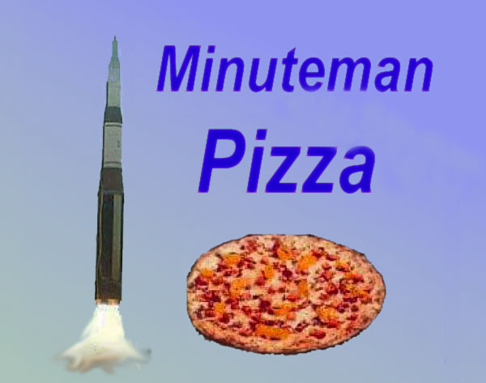
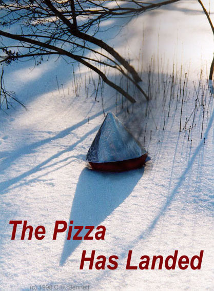

<!doctype html public "-//w3c//dtd html 4.0 transitional//en">
<html>
<head>
<meta http-equiv="Content-Type" content="text/html; charset=UTF-8"/>
   <meta http-equiv="Content-Type" content="text/html; charset=iso-8859-1">
   <meta name="GENERATOR" content="Mozilla/4.75 [en] (Windows NT 5.0; U) [Netscape]">
   <title>newpage</title>
</head>
<body>

<p>The doomsday technology that kept the Cold War cold has now been put
to a more wholesome use - delivering fresh hot pizza anywhere in the world
in about 20 minutes. Just punch in your order on our Minuteman Pizzamatic
ordering module, and we do the rest. Within seconds, the Pizzamatic automatically
calculates your position and places your order. Soon you receive a confirmation
from Mission Control of the menu items you have ordered, with a guaranteed
delivery time (if your pizza arrives late, it's on us - you owe nothing).
You still have one minute to cancel your order or add extra toppings. When
you are sure you are ready, simultaneously turn the two red keys at the
bottom of the Pizzamatic to initiate delivery. It is now too late to change
your mind - an inexorable process is about to unfold: The finest cold ingredients
are assembled, placed aboard one of our launch vehicles, using the latest
MERV technology (multiple edible reentry vehicles), and sent on their way.
While enroute, your pizza cooks to perfection as the heat of atmospheric
friction partly burns away its thick lower crust. As soon as the pizza
has landed, within about 100 feet (CEP) of your doorstep or&nbsp; other&nbsp;ordering
location, it is ready to eat - just peel away the cone-shaped aluminum
foil cover and enjoy!
<p>During the Cold War, hundreds of billions of dollars went into developing
and building ICBMs that were never used. Today the civilian descendants
of these missiles make thousands of deliveries every hour, realizing economies
of scale undreamt of by their original inventors. We are proud to offer
our unique service for the amazingly low price of $749.50 for a basic large
cheese pizza (serves four), and $2.00 for each additional topping. Discounts
are available for multiple deliveries to the same location (perfect for
wedding receptions and lawn parties - just stay under the tent until all
the pizzas have arrived).
<p><font size="-1">(Web site (c) 1998, 99 C.H. Bennett, H.J. Bernstein and
J.A. Smolin. "Minuteman Pizza," "Minuteman Pizzamatic," "MERV," and "The
Pizza Has Landed" are trademarks.)</font>
<p>
<hr width="100%">
<ul>
<h2>
Other Links:</h2>
<h2>
<font size="+1"><a href="../bennetc/holistic.html">Institute of Holistic Computer Wellness</a></font>&nbsp;
<font size="+0">(Natural cures for your computer, with R. Werner)</font></h2>
<h2>
<font size="+1"><a href="../bennetc/mineral.html">The Mineralarians</a></font>&nbsp;
<font size="+0">(People who eat no animal or vegetable food)</font></h2>
<font size="+1"><a href="/">Back to Charles H. Bennett Home Page</a></font></ul>
<hr width="100%">
<p>You are visitor number&nbsp;

since 19 Nov. 2001.
<font size="-1">Email bennetc@bestweb.net</font>
</body>
</html>